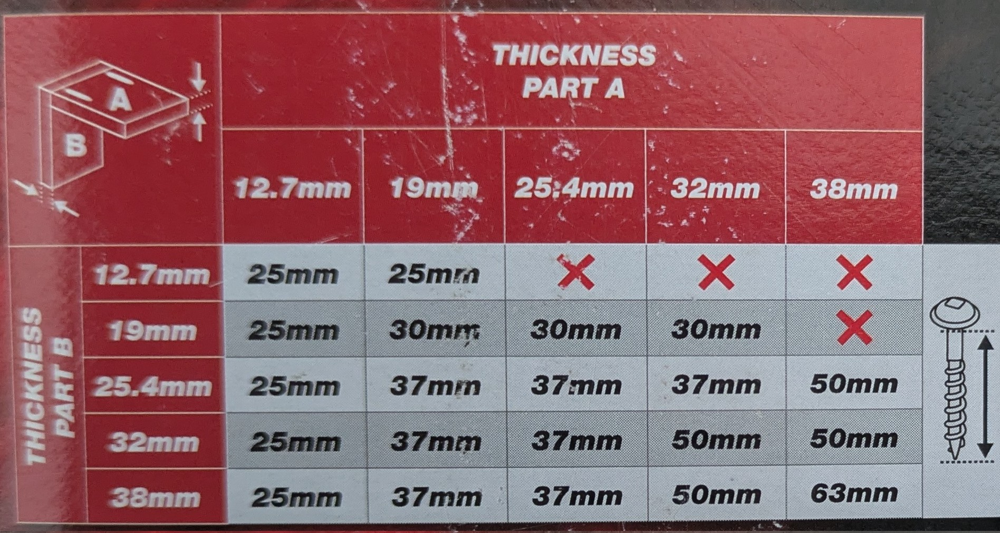

☰
Pocket hole screws
Threads per inch (TPI)
- Coarse screws are used for soft wood (eg: CLS timber), MDF, particle board and plywood.
- Fine thread screws are used for hard wood.
Lengths

- 38 mm Stud to stud: 63 mm or $2\frac{1}{2}^"$
- 18 mm plywood to plywood: 30 mm or $1\frac{3}{16}^"$
- Stud to plywood: try 30 mm